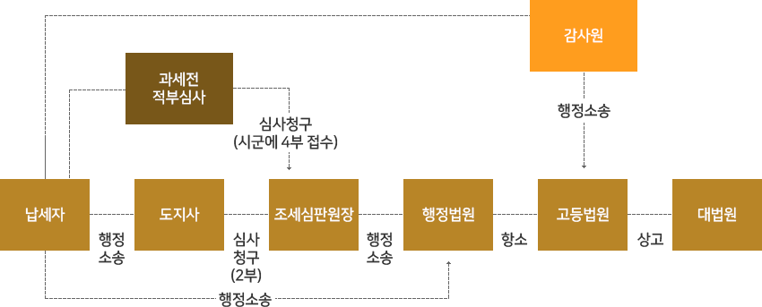
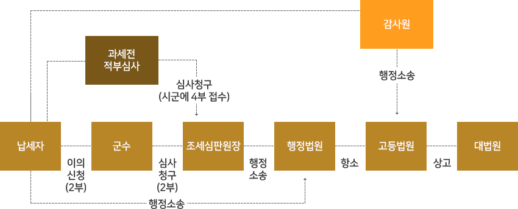

군민과 함께하는 창조적인 희망군정 활력넘치는 희망의성! 살기좋은 의성으로 오세요~!

행정정보/개방

지방세 구제제도
지방세 부과(신고납부 또는 수정신고납부 포함)에 대하여 이의가 있을 경우에 납세자가 행정심판 청구에 갈음하여 처분청에 구제를 청구하는 이의신청과 이에 불복하는 경우에 상급감독관청에 구제를 청구하는 심사청구, 감사원법에 의한 심사청구제도가 있으며, 이외에 행정소송, 부당이득 반환청구의 소, 손해배상청구 등을 통한 구제방법이 있음.
지방세 구제제도란
- 지방세 부과(신고납부 또는 수정신고납부 포함)에 대하여 이의가 있을 경우에 납세자가 행정심판 청구에 갈음하여 처분청에 구제를 청구하는 이의신청과 이에 불복하는 경우에 상급감독관청에 구제를 청구하는 심사청구, 감사원법에 의한 심사청구제도가 있으며 이에 불복할 경우 행정소송을 제기하여 최후적으로 법원의 판결을 통하여 구제받는 방법이 있다.
- 그 외 민사소송으로 조세행정처분이 당연 무효인 경우에는 이미 납부한 세액을 부당이득반환 청구의 소를 제기하는 방법과 국가배상법 제2조의 규정에 의하여 공무원의 고의 또는 과실로 위법한 과세처분을 하여 납세자에게 손해를 가한 때에 손해배상청구를 통한 구제방법이 있다.
- 2002년부터 이의신청과 심사청구를 하지 않고 행정소송을 제기할 수 있음
이의신청(1차 구제방법)
- 신청기간 : 그 처분이 있은 것을 안 날(처분의 통지를 받은 때에는 그 통지를 받은 날)로부터 90일 이내
-
신청기관
- 도세(공동시설세 제외) - 도지사(처분시군 접수도 유효)
- 시군세(공동시설세 포함) - 시장·군수
-
결정
- 이의신청을 받은 날로부터 90일(보정요구기간 20일 제외) 이내에 지방세 심의위원회의 의결에 따라 결정 통보
결정내용
- 각하 : 신청·청구기간이 경과하였거나 보정기간이 경과된 경우
- 기각 : 신청·청구가 이유가 없다고 인정되는 경우
- 인용(처분의 취소) : 신청·청구가 이유가 있다고 인정되는 경우
- 경정 : 신청·청구가 일부 이유가 있다고 인정되는 경우
심사청구(2차 구제방법)
- 신청기간 : 이의신청에 대한 결정의 통지를 받은 날(이의신청 결정기간 내에 결정의 통지를 받지 못한 경우는 결정 기간이 경과한 날)로부터 90일 이내
-
신청방법
- 도세(공동시설세 제외)는 조세심판원장에게 2부 제출
- 시군세(공동시설세 포함)는 지방자치단체장 또는 조세심판원장에게 2부 제출
- 결정 : 심사청구를 받은 날로부터 90일(보정 요구기간 20일제외) 이내에 지방세심의위원회의 의결에 따라 결정 송달
-
효과 : 결정에 불복이 있을 경우 결정통지를 받은 날부터 90일 이내에 행정소송 제기 가능함
- 불복청구 『선택적 2심제』 도입(2006년 신설)
- 근거법령 : 지방세법 제 74조 제 3항 제도신설 이유
- 제도신설 이유 : 2005년까지는 심사청구를 하려면 반드시 이의신청을 거치도록 했으나 현재는 납세자가 원하는 경우 납세자의 신속한 권리구제를 위하여 선택적으로
- 청구할 수 있도록 함
단, 재산특례는 부양의무자 가구에 근로능력이 있는 가구원이 없거나 또는 재산이 주택에 한정되어 있는 경우에만 적용 (부양의무자 재산기준 특례)
감사원 심사청구
- 감사원에 심사청구를 신청하고자 하는 경우에는 시장·군수의 과세처분이 있은 것을 안 날(처분의 통지를 받은 때에는 그 통지를 받은 때)로부터 90일 이내에 처분 시·군에 감사원심사청구서(증빙서류를 첨부하여 4부)를 제출하면 시장·군수는 의견서를 첨부하여 도지사 및 조세심판원장을 경유 감사원에 1개월 이내 송부한다.
- 감사원의 심사결정에 불복할 경우에는 심사결정의 통지를 받은 날부터 90일 이내에 처분청을 당사자로 행정소송을 제기할 수 있음.
-
참고사항
- 시·군세의 심사청구는 지방자치단체장 또는 조세심판원장에게 선택적으로 청구 가능
- 청구기간·결정기간은 모두 90일이며, 보정요구가 있을 때에는 결정기간이 20일간 연장
- 감사원 심사청구와 지방세 이의신청을 동시에 청구하면 지방세 이의신청은 각하 결정됨
- 기간의 계산
- 계산일은 초일불산입 원칙(민법 제 157조)에 의하여 2006.03.05에 이의신청 및 심사결정 통지를 받았을 경우 2006.03.06부터 기산하여 90일이 되는 2006.06.03까지 심사청구 또는 행정소성 제기 가능. 기한만료일이 공휴일인 때는 익일에 기한이 만료된 것으로 본다.
준사법적 절차 도입(2003년부터) - 지방세 불복청구자에 대한 서류의 열람과 의견진술권 부여
열람
- 이의신청 또는 심사청구에 관계되는 서류를 열람하고자 하는 자는 구술로 당해 지방자치단체장 또는 조세심판원장에게 요구할 수 있음
- 서류의 열람 요구를 받은 지방자치단체장 또는 조세심판원장은 그 서류를 열람하게 하여야 함
- 서류의 열람 요구를 받은 지방자치단체장 또는 조세심판원장은 필요하다고 인정하는 때에는 그 열람하는 자의 서명을 요구할 수 있음
의견진술
- 의견을 진술하고자 하는 자는 진술자의 주소 또는 거소 및 성명과 진술하고자 하는 내용의 대강을 기재한 문서로 당해 지방자치단체장 또는 조세심판원장에게 신청하여야 함
-
의견진술 신청을 받은 지방자치단체장 또는 조세심판원장은 다음 각 호에 해당하는 경우를 제외하고는 출석일시 및 장소와 필요하다고 인정되는 진술시간을 정하여 지방세심의위원회의 회의 개최 3일전까지 신청인에게 통지하여 의견진술의 기회를 부여하여야 함
- ① 이의신청 또는 심사청구의 목적이 된 사항이 경미하거나 기일이 경과한 후 그 신청 또는 청구가 있은 경우
- ② 이의신청 또는 심사청구의 목적이 된 사항이 법령해석에 관한 것으로서 신청인 또는 청구인의 의견진술이 필요없다고 인정되는 경우
- 의견진술이 필요없다고 인정되는 때에는 지방자치단체장 또는 행정자치부 장관은 이유를 명시한 문서로 그 뜻을 당해 신청인에게 통지하여야 함
- 의견진술은 간명하게 하여야 하며 필요한 경우에는 이에 관한 증거 그 밖에 자료를 제시할 수 있음
- 의견진술은 진술하고자 하는 의견을 기록한 문서의 제출로 갈음 할 수 있음
준사법적 절차 준용
- 행정심판법에서 적용하고 있는 청구인의 대표자선정, 청구인의 지위승계, 이해관계인의 참가, 청구의 변경, 구술심리 등 준사 법적 절차와 관련된 일부 규정을 준용
- 행정심판법 제11조, 제12조, 제16조, 제20조, 제26조
도세구제절차

시군세구제절차

- 담당부서 : 토지관리팀
- 담당자 : 홍길동
- 연락처 : 054-123-1234
최종수정일 :
이 페이지에서 제공하는 정보와 사용편의성에 만족하시나요?